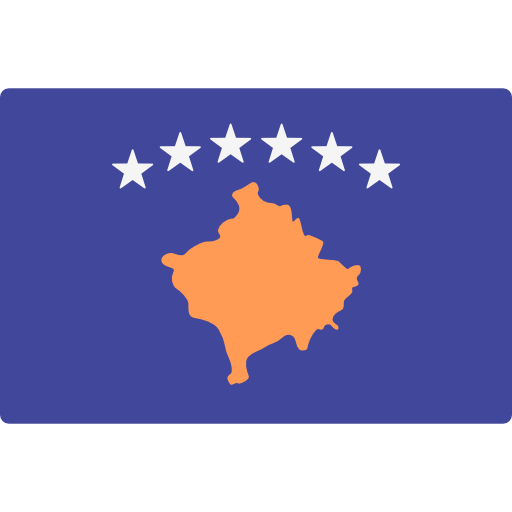

Kosovo Independence Day
Kosovo Independence Day is celebrated annually on February 17, marking the day in 2008 when Kosovo declared independence from Serbia. The event is a significant milestone in the country's history, symbolizing its desire for self-determination and sovereignty.
History of Kosovo's Struggle for Independence
For much of the 20th century, Kosovo was part of Serbia under the former Yugoslavia. During the 1990s, the region experienced violent conflict, culminating in the Kosovo War in 1999. Following NATO's intervention and years of international administration, Kosovo’s path to independence became clear. After declaring independence on February 17, 2008, Kosovo has steadily worked towards full recognition and international recognition as an independent state.
The Declaration of Independence
On February 17, 2008, the Assembly of Kosovo declared independence from Serbia, following years of conflict and international oversight. This declaration was met with both support and opposition, with some countries recognizing Kosovo as an independent state, while others, including Serbia, continue to dispute its status.
Significance of the Day
Independence Day is not only a celebration of Kosovo's sovereignty but also a day to reflect on the struggles and achievements of the people. It is a reminder of Kosovo's journey to self-governance and its ongoing efforts to build a peaceful and democratic society.
Celebrations
Each year, Kosovo marks Independence Day with various ceremonies, including flag-raising events, speeches from government leaders, and public celebrations. It is a day of national pride for Kosovars, both in Kosovo and the diaspora.
Watch the 2008 Declaration of Independence
View the moment when Kosovo declared its independence in 2008:
Click here! Related Articles
Learn more about Kosovo’s history and politics: